In this project, I performed comprehensive network reconnaissance and vulnerability scanning on a target system. I utilized industry-standard penetration testing tools and methodologies to identify open ports, running services, and potential security vulnerabilities. The objective was to demonstrate proficiency in network mapping, service discovery, and vulnerability assessment—critical first steps in any professional security assessment.
This project showcases my ability to: - Configure and manage virtualized environments for security testing - Execute network scans using specialized security tools - Interpret scan results to identify attack vectors - Document findings in a professional manner
I configured a controlled lab environment using two Linux virtual machines to simulate a real penetration testing scenario:
I began by initializing both virtual machines and establishing connectivity between them.
Starting the Kali Linux Attack Platform:
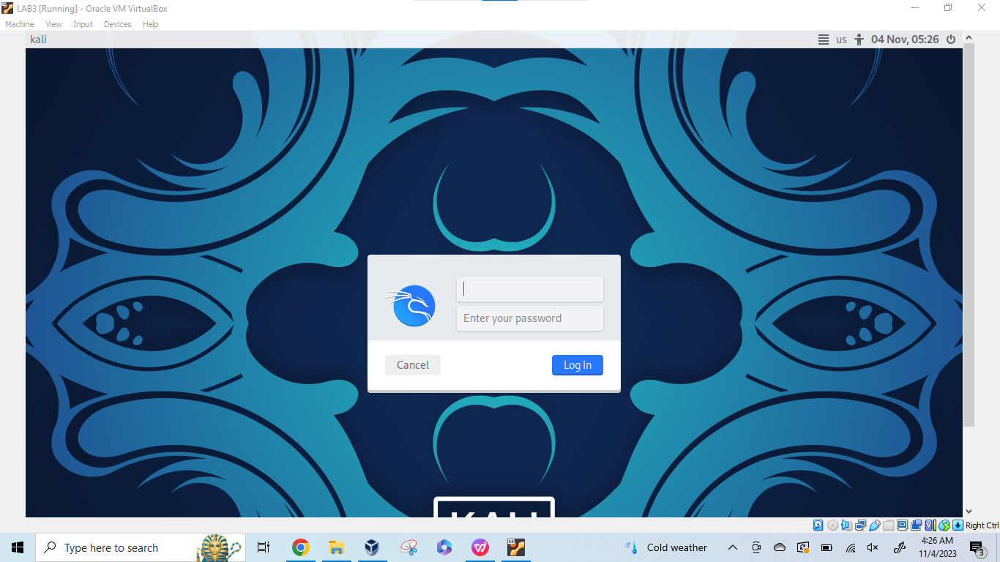
Kali Linux system after authentication and desktop initialization:
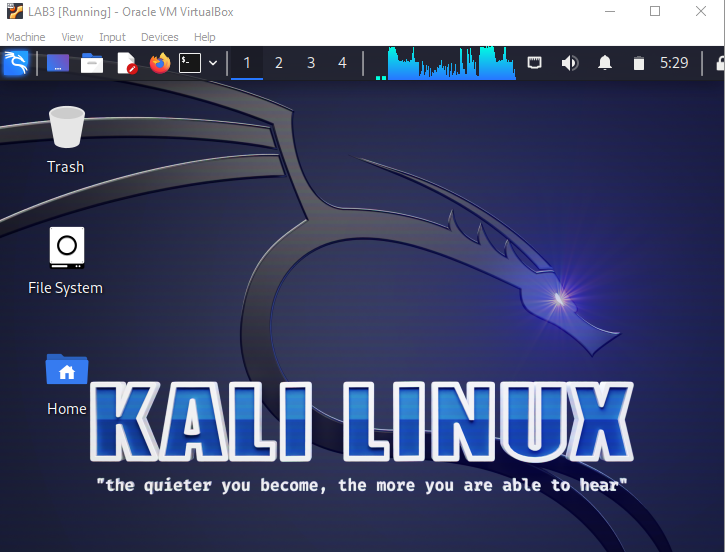
Launching the Metasploitable2 target system:
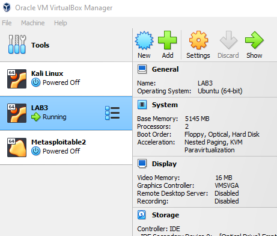
Target system authentication screen after boot:
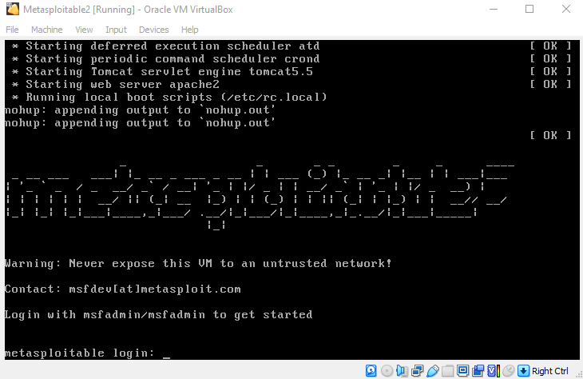
Target system running and ready for assessment:
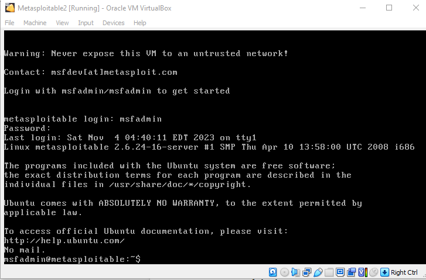
Before launching any scans, I needed to identify the network address of the target system. This is essential for directing reconnaissance tools to the correct host.
I accessed the Metasploitable2 system and executed the ifconfig command to enumerate network interfaces and retrieve the target's IP address.
Network configuration output showing the target system's IP address:
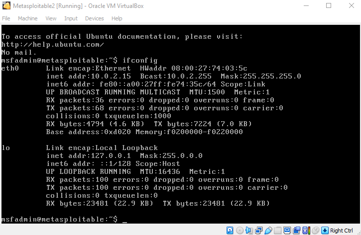
Result: The target system was assigned IP address 10.0.2.15 on the internal network. This address became the focus point for all subsequent scanning activities.
With the target identified, I conducted port and service scanning using Nmap, one of the most powerful and widely-used network reconnaissance tools in the industry.
I switched to the Kali Linux attack platform and opened a terminal to execute the network scan.
Terminal interface ready for command execution:
I executed the following command to perform rapid port scanning on the target:
$ nmap –T4 10.0.2.15
Parameters used:
- –T4: Aggressive timing template for faster scan execution
- 10.0.2.15: Target IP address
Nmap scan results for the target system:
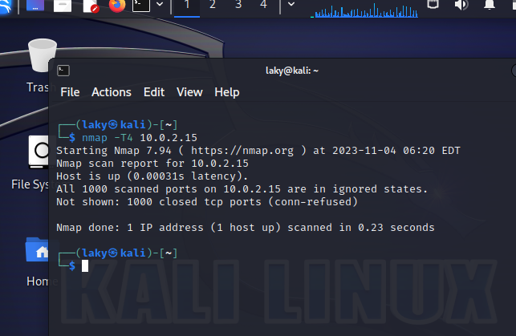
The scan revealed a rich target environment with multiple exposed services:
Identified Open Ports and Services: - FTP (Port 21): File Transfer Protocol service - SSH (Port 22): Secure Shell for remote access - HTTP (Port 80): Web server - MySQL (Port 3306): Database service - Additional services indicating potential vulnerabilities
Each identified service represents a potential attack surface that could be exploited by an attacker. The presence of multiple outdated services suggested the target system was running legacy software without current security patches.
Nmap Manual Reference:
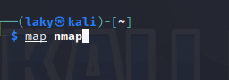
To provide a more comprehensive vulnerability analysis beyond port discovery, I deployed OpenVAS (Open Vulnerability Assessment System), an enterprise-grade vulnerability scanning platform.
OpenVAS was pre-configured in the lab environment. I verified that all required services were running by checking network listeners.
Initiating OpenVAS services:
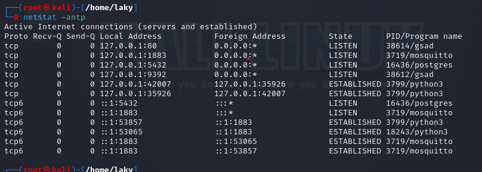
Verification of running OpenVAS services:
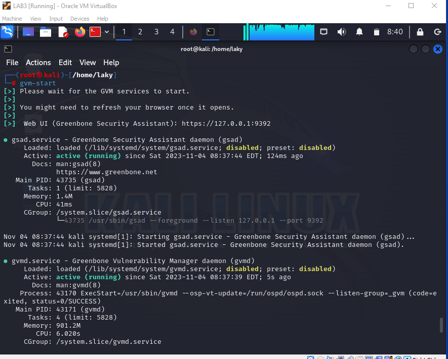
I accessed the OpenVAS web console through the browser interface.
Browser application used to access the web interface:
Firefox browser launched on Kali Linux:
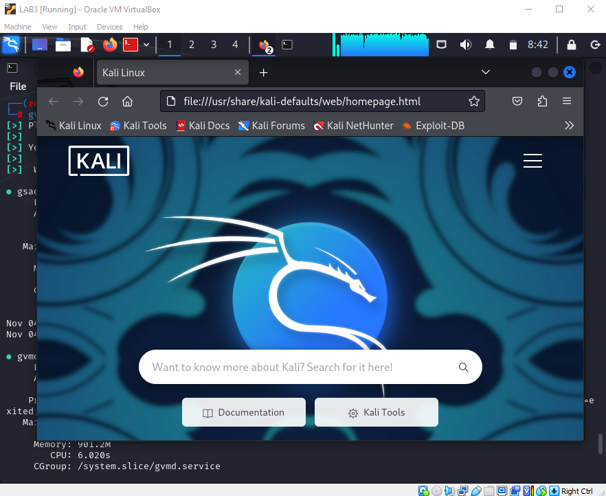
Greenbone Security Assistant (OpenVAS) login page:
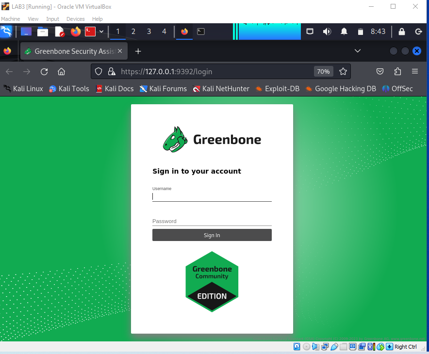
Once authenticated in OpenVAS, I initiated a comprehensive vulnerability scan of the target system using the Quick Start feature. This function automatically:
OpenVAS dashboard with Quick Start scan interface:
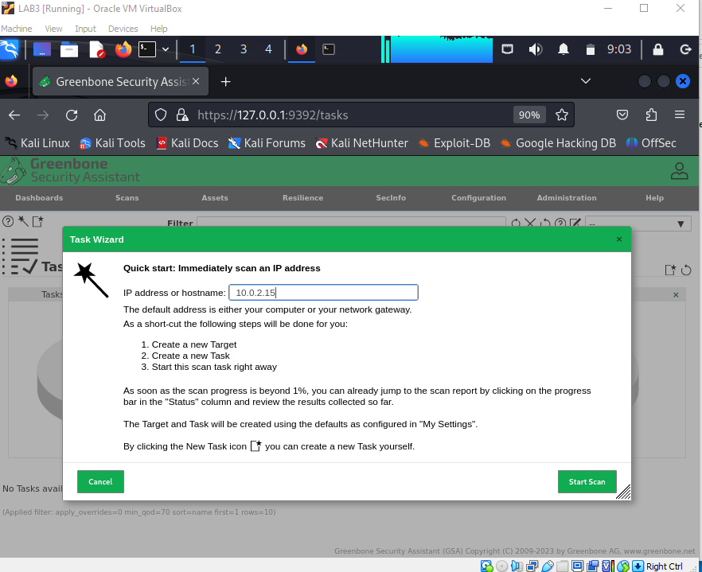
Upon completion, OpenVAS generated a comprehensive report identifying vulnerabilities, their severity levels, and potential remediation strategies.
Final vulnerability assessment report:
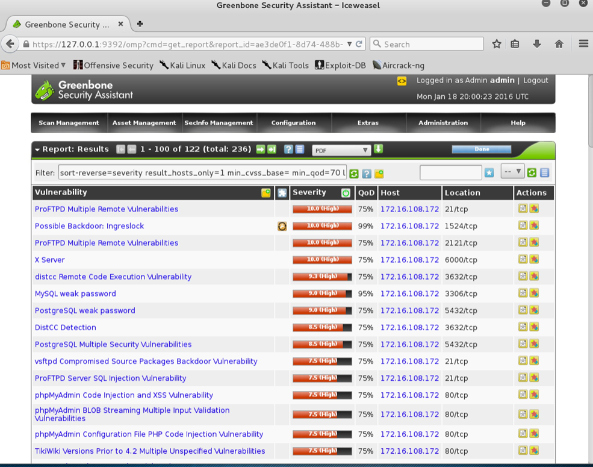
As an extension of this reconnaissance work, I explored network privacy concepts and the distinction between encryption and anonymity.
A common misconception is that HTTPS provides anonymous web browsing. While HTTPS delivers encryption (confidentiality) and server authentication, it does not mask the fact that communication is occurring with a particular destination. Network observers can identify the websites you visit based on traffic analysis alone.
I explored onion routing technology, which provides genuine anonymity by routing encrypted traffic through multiple relay servers worldwide. In this model:
IP address verification before privacy measures:
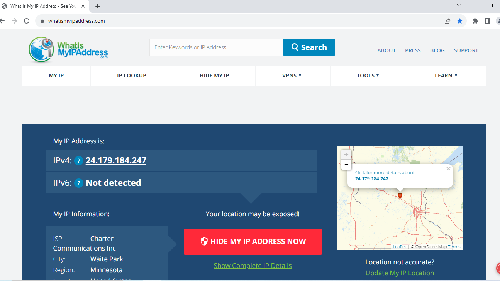
IP address after utilizing Tor Browser anonymity network:
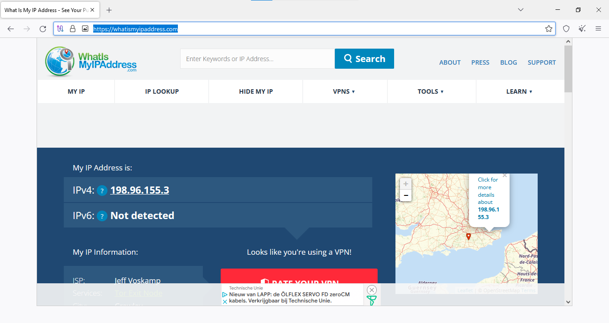
Side-by-side comparison of multiple browsers showing different IP addresses:
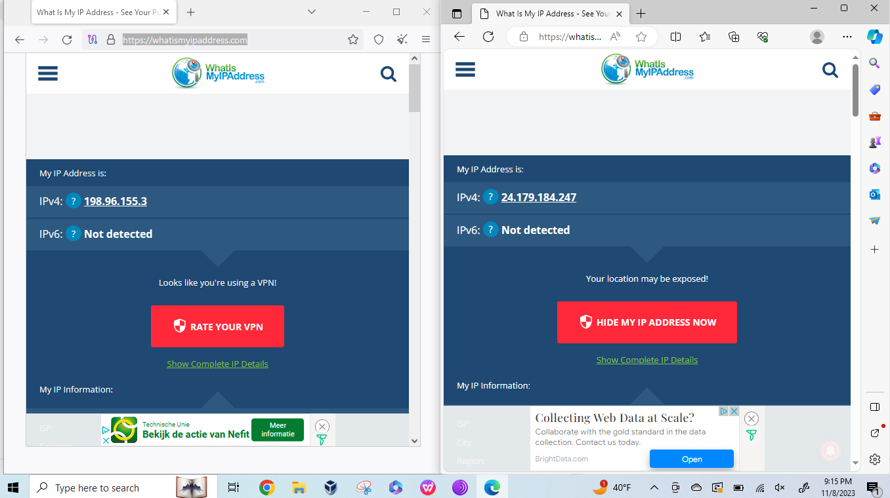
Through this project, I gained practical experience in:
This project demonstrates my capability to conduct professional security assessments, use industry-standard tools effectively, and understand the foundational concepts of information security and penetration testing.